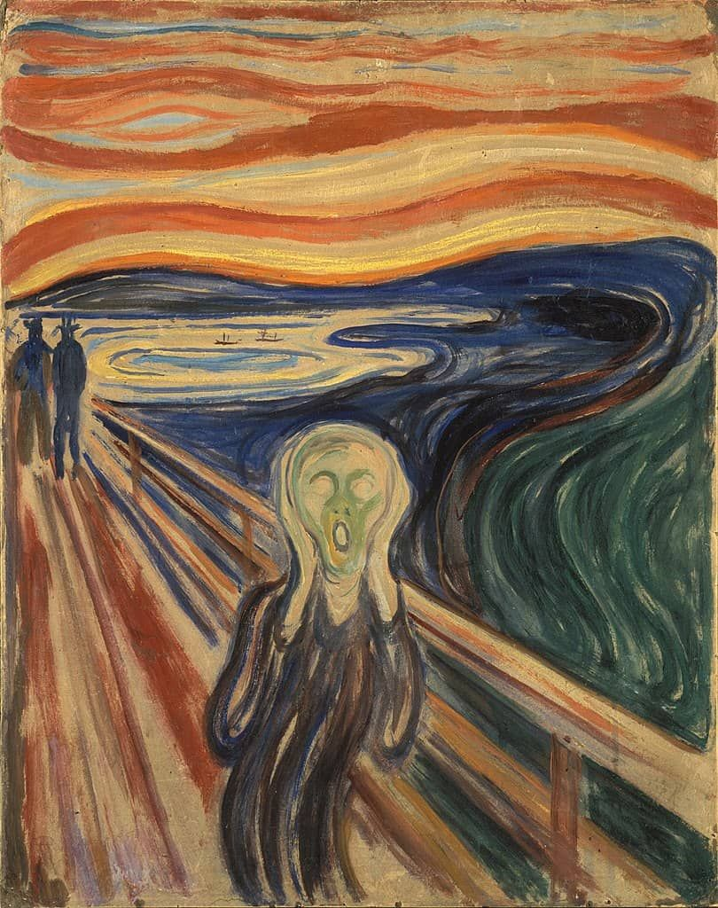

יחידות / 01
יחידה 01
חוויה אישית כמקור השראה
רגש · זיכרון · יומן

החיים שלכם הם מקור ההשראה העשיר ביותר. היחידה מתקדמת בהדרגה: משפת הרגש, דרך קו וקומפוזיציה, אל הזיכרון והיומן האישי, ומשם לאמנים שיצרו מתוך חייהם ולניסויים שהופכים חוויה אישית לעבודה. בסוף מתבוננים במה שנוצר. כל שיעור בנוי על הקודם.
8 שיעורים + סיכום יחידה
- השראה
- התבוננות
- רעיון
- יצירה
מקורות השראה ורקע על האמנים
התקדמות
- רגש
- קו
- קומפוזיציה
- זיכרון
- זמן
- לימוד אמן
- ✦ יצירה אישית
- צורה ומחווה
השיעורים
-
1.1
רגש בשפה חזותית
מבוא, כיצד הופך רגש פנימי לסימן, צבע או צורה גלויים?
על השיעור
השיעור הפותח של היחידה. התלמידים נתקלים בשאלה המרכזית: כיצד הופך רגש פנימי לסימן, צבע או צורה גלויים? דרך מונק ורוטקו, הם מגלים שצבע אינו קישוט, הוא שפה רגשית.
45 דקות לשיעור← -
1.2
כיצד הופך רגש לציור
רגש ← איכות קו ← ציור ← שכבת צבע ← סימן אישי
על השיעור
השיעור הראשון בסטודיו. התלמידים בוחרים רגע אישי, מזהים את רגשו, בוחרים איכות קו המתאימה (רך, חד, שבור, רציף...), מציירים בקווים בלבד, ואז מוסיפים שכבת צבע מלמעלה. 15 שלבים מודרכים.
55 דקות לשיעור← -
1.3
רגש כקומפוזיציה
כיצד הרגש מתפרס על הדף, מיקום, מרחב ובחירות קומפוזיציוניות
על השיעור
לאחר עבודה עם קו ב-1.2, שיעור זה מעביר את השאלה: כיצד מתפשט הרגש על פני הדף כולו? התלמידים עובדים עם מיקום (איפה בדף), פרופורציה (כמה מקום), ויחסים בין אזורים ריקים ומלאים. 11 שלבים מודרכים.
45 דקות לשיעור← -
1.4
כיצד הופך זיכרון לציור
זיכרון ← חלקים ← קומפוזיציה ← ציור ← רפלקציה
על השיעור
המעבר מרגש מיידי לזיכרון. הזיכרון אינו מלא אף פעם, הוא מגיע בשברים: צבע, מרקם, צורה, מקום. התלמידים בוחרים זיכרון אישי, שוברים אותו לחלקיו, מציירים את החלקים מבלי לנסות לשחזר סצנה, ואז מסדרים אותם לקומפוזיציה. 12 שלבים מודרכים.
50 דקות לשיעור← -
1.5
כיצד יומן אישי הופך ליצירת אמנות
מבוסס-זמן, איסוף רגעי שבוע לדף אחד
על השיעור
<i class='fa-solid fa-arrow-left'></i> פתח שיעור
50 דקות לשיעור← -
1.6
אמנים כהשראה, פרידה קאלו
איך אמנים הופכים חוויה אישית לציור
על השיעור
התלמידים לומדים את דיוקנאות העצמית של פרידה קאלו כעולם חזותי אישי, דמות, מקום, סמלים וצבע המשולבים לביטוי חוויה פנימית. לאחר מכן יוצרים ציור הבנוי מחוויה אישית משלהם.
45 דקות לשיעור← -
1.7
חוויה אישית כמקור ליצירה, חלק א: ניסויים
שלושה אמנים, חוויה אחת, שלושה ניסויים
על השיעור
התלמידים מכירים את פרידה קאלו, אדוורד מונק ולואיז בורז׳ואה, בוחרים חוויה אישית אחת ובודקים אותה בשלושה ניסויים קצרים: צבע, קו ותנועה, מרחב וקומפוזיציה.
45 דקות לשיעור← -
1.8
חוויה אישית כמקור ליצירה, חלק ב: פיתוח עבודה
משלושה ניסויים לעבודה אחת גדולה
על השיעור
התלמידים חוזרים לשלושת הניסויים, בוחרים את זה שהם רוצים לדעת לאן הוא יכול להתפתח, ומפתחים ממנו עבודה גדולה, עם עצירה אחת להתבוננות ורפלקציה על התהליך.
45 דקות לשיעור← -
1.9
✦ סיכום היחידה: מה נשאר איתי
התבוננות בעבודות שנוצרו ביחידה
על השיעור
השיעור שסוגר את היחידה. הפעם לא מציירים: התלמידים בוחרים אחד מהציורים שיצרו, מתבוננים במה שמופיע בו וכותבים מה הם לוקחים איתם מהיחידה.
30 דקות לשיעור←